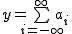

Wiki-страницы позволяют вставлять формулы в формате TeX.
Wiki pages make it possible you to insert a formula in TeX format
Для отрисовки формул используется программа mimeTeX. В версии OutWiker под Windows mimeTex прилагается и расположена в директории tools\mimetex, под Linux mimeTeX необходимо установить самостоятельно. В deb-пакете OutWiker'а mimeTeX упомянут в списке зависимостей.
To render the formulas make use of the program mimeTeX. In the version for Windows mimeTex attached and located in the directory "tools\mimetex", under Linux mimeTeX need to install yourself. In the deb-package mimeTeX is dependent.
Формулы располагаются между скобками {$ ... $}. Например, команда {$ y = \bigsum_{i=-\infty}^{\infty}a_i $} выведет следующую формулу:
Formulas are between brackets [=]. For example, the command {$ y = \ bigsum_ {i =- \ infty} ^ {\ infty} a_i $} will display the following formula:
Также можно использовать команду \fontN, где N (от 1 до 5) условно обозначает размер шрифта, чем N больше, тем шрифт крупнее.
You can also use the command \fontN, where N (from 1 to 5) indicates the font size. Than N bigger the larger the font
| Formula | Result |
| {$ y = \bigsum_{i=-\infty}^{\infty}a_i $}
Размер по умолчанию (\font3) | |
| {$ \font1 y = \bigsum_{i=-\infty}^{\infty}a_i $} |  |
| {$ \font2 y = \bigsum_{i=-\infty}^{\infty}a_i $} |  |
| {$ \font3 y = \bigsum_{i=-\infty}^{\infty}a_i $} |  |
| {$ \font4 y = \bigsum_{i=-\infty}^{\infty}a_i $} |  |
| {$ \font5 y = \bigsum_{i=-\infty}^{\infty}a_i $} |  |